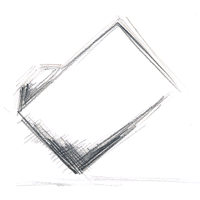

An icon generally displays one or more objects, and one of the important choice is how you represent the objects in term of perspective (2D or 3D).
isometric 3D view: The object is viewed in a classic 3D isometric view. The light source should be positionned in the top front, a bit over the camera (not in the same position).
2D view (like sitting on a shelf): The object is viewed as a plane in front of the camera. Depending on the object, it could be a front view (imagine a book for instance) or a top view (a keyboard). The light source should be positionned in front or on top, in the same position than the camera.
2D icons are a better choice when you display a lot of similar icons, while 3D icons tends to stand-out. Thus, GNUstep icons should use a 3D view for important or relatively rare icons like the applications icons or the locations related icons such as a home directory, a hard disk, a server (WebDav, FTP, etc.), a camera... Very common and repetitive locations related icons like a standard folder should be represented with a 2D view but must then use a 30 degrees counter-clockwise rotation (so they still stand-out in comparison of other icons).

Any other icons like the documents icons, the toolbar icons and the buttons icons should use a 2D view (to know more about that, read Section 3.5.1).
While we shouldn't try to rely too much on them (as some people has colors perception problems), colors are a very efficient indicator, and could add meaning to an icon.
The icons which triggers a potentially destructive action (like Cancel, Delete, Erase etc.) should be partially red. The icons which triggers or warns about a exceptional or really special action (like Connect/Disconnect, Move to trash, Remember, Test etc.) should be partially yellow.
When you layout a window outside the toolbar, try to use as much as possible traditionnal controls and not special icons. For the buttons, when you want a more visual, intuitive look, it is important to not use small colored icons, but monochromatic dark gray images to avoid too much visual distraction.
IconKit offers the possibility to composite icons with different elements to obtain final icons easily. For example, you could use this mechanism to easily build icons with common look. In the same way, IconKit lets you composite small graphical elements which are called badges on the fly over an existing icon (that could be used to mark a document as urgent, or locked, etc.).
Example : toolbar icons in a mail application like Reply, Forward etc. can be based on single a icon element (like a message icon) and with the help of the composition method, the final look of the icons will be specified by rendering different sort of arrows over the primary icon element.
Icons composition is used to implement simple icon family support, which you can customize to better fit the final look you desire. By default when you link to the IconKit, default documents, preferences and plugins icons are created by badging documents, preferences and plugins templates icons with the application icon. But you have the possibility to override this behavior by importing your own icons in your application project.